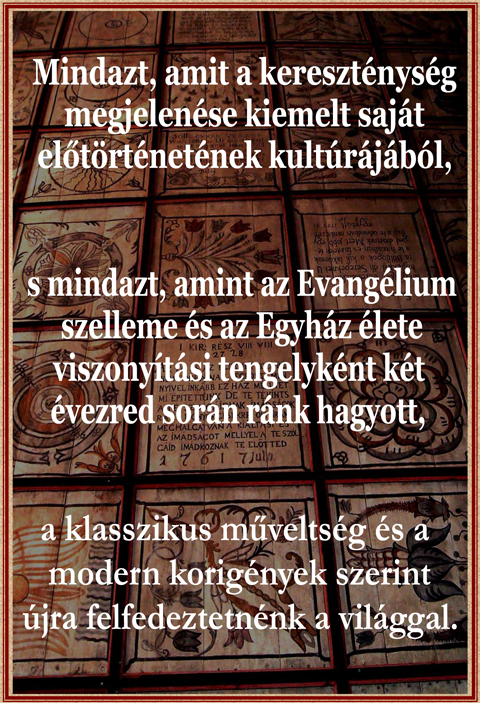

A Keresztény Kulturális Akadémia az egyetemes keresztény gondolkodás (Universal Christian Thought) magyarországi szervezete, amely mind az anyaországi, mind a határokon túli regionális csoportokkal képez egy kultúrát terjesztő hálózatot és kapcsolatot tart a többi keresztény értelmiségi mozgalmak között.
Az Akadémia feladata az európai ember, család és nemzeti közösség visszavezetése eredeti szellemi forrásaihoz.

A Keresztény Kulturális Akadémia célja a keresztény szellemű nemzeti kultúrának, mint folyamatos, legfontosabb fenntartó erőnek népszerűsítése, elsősorban a ma élő, ezt szolgáló géniuszok baráti összefogásával, valamint országos, és határon kívüli magyar közösségek regionális bevonásával.
Ennek megfelelően az Akadémia hat csoportból áll:
Az első a Védnöki Testület – olyan jeles személyiségek zárt köre, akik meghatározzák az Akadémia rangját, döntenek működéséről, tekintélyt biztosítanak az Akadémia nyilatkozatainak. Tagjai: Budai Ilona, Dévai Nagy Kamilla, Döbrentei Kornél, Dörner György, Eperjes Károly, Faragó Laura, Haeffler András, Jókai Anna, Kondor Katalin, M. Szabó Imre, Németh Miklós Attila, Oberfrank Pál, Pajor András, Petrás Mária, Pitti Katalin, Siklósi Beatrix, Szakolczay Lajos, Wittner Mária.
A második maga az Akadémiai Rendes Tagság – a Védnöki Testülethez döntési szerep nélkül kapcsolódó közösség, melybe erre kiérdemesült, a nemzeti kultúra gyarapításáért vagy nemzetközi szintű népszerűsítéséért hosszú időn keresztül tevékenykedő személyek kapnak meghívást.Tagjai: Simon András, Hegedűs Valér, Baranyi László, Cseke Péter, Tuzson-Berczeli Péter, Vidnyánszky Attila.
A harmadik az Operatív Tanács – amely folyamatosan munkálkodik a működési stratégián, kezdeményezéseit a VT hagyja jóvá. Vezetője: Dr. Szalay Kornél.
A negyedik a Szakértői Bizottság – amely megnyilatkozásaink hátterében a megalapozottságot biztosítja. Elnöke: Dr. Hoffmann Rózsa.
Az ötödik a Közéleti Szekció, amely társadalmi szinten képviseli Akadémiánkat. Elnöke: Dr. Hende Csaba.
A hatodik pedig a Regionális Csoportok Szervezete, amely országszerte gyűjti a vezető értelmiséget és azt a közönséget, amelyen keresztül sajátosan képviselt értékrendünk valamelyest visszaépülhet hazánkban és a határokon túl élő magyarság körében, valamint más népek olyan közösségeiben, akik szívesen ismerkednek a magyar kultúrával.
Alapító: Óbert János
Elnök: Pajor András
Alelnök, regionális elnök: Ruszki Gábor
Jelenleg nincs aktív hirdetés...
Keresztény országértékelő - 2016 (plakát megtekintése)
Cornelius-díj átadóünnepség - 2016 (plakát megtekintése)
Akadémiánk vállalja művészeink, tudósaink, íróink, újságíróink különféle meghívásainak közvetítését. Működésünk kezdete óta jó néhány sikeres programszervezés történt, reméljük, hogy ennek baráti jellegű elősegítésére a jövőben is alkalmunk nyílik. Mindez a gyors intézkedés érdekében a következő feltételek szerint történik:
Kérjük a fenti szempontok fegyelmezett figyelembevételét, ezzel megkönnyítjük a műsorszervezést. Az egyes meghívásokra történő műsoroknak és támogatóiknak le-hetőséget biztosítunk a honlapunkon történő megjelenéshez. Célunk annak elősegí-tése, hogy kiemelkedő színvonalú előadásokat juttassunk el a legegyszerűbb embe-rekhez is, s ha ehhez támogatókat találunk, akkor az anyagi feltételeket is mi ma-gunk segítjük elő. Szeretettel várjuk igényes közösségek jelentkezését.
A KKA Operatív Bizottsága
Díjat alapított a KKA Operatív Bizottsága, melyet Cornelius századosról nevezett el, aki az Apostolok cselekedeteinek 10. fejezete szerint az első pogányságból megtért tanúságtevő volt.
A díjat a keresztény szellemiségű kultúra terjesztőinek adnák át, melyre ebben az évben a felsőoktatási munkában kiemelkedő három személynek ítélnének oda. A Bizottság olyan szponzorok jelentkezését várja, akik a Cornelius-díj anyagi fedezetéhez hozzájárulnának.
Eddigi díjazottjaink:
A díjak átadói az előző évi díjazottak, valamint Dr. Hende Csaba fővédnök, Jókai Anna akadémiai védnök és Ft. Pajor András elnök.
Pályázat A KÖNYVISMERTETÉS ÉS SZENTHAGYOMÁNY című irodalmi tanulmányhoz – papnövendékek részére
pályázati adatlap letöltése
Az egyesülési jogról, a közhasznú jogállásról, valamint a civil szervezetek működéséről és támogatásáról szóló 2011. évi CLXXV. törvényben (a továbbiakban Ectv.) rögzített beszámolási szabályok szerint a civil szervezetek, illetve jogi személyiséggel rendelkező szervezeti egységei a működésükről, a vagyoni, pénzügyi és jövedelmi helyzetükről az adott üzleti év utolsó napjával a kötelesek beszámolót készíteni a 224/2000. (XII.19.) Korm. rendelet alapján. A már közhasznú, illetve a jövőben a közhasznú fokozat megszerzését célzó civil szervezet a beszámolójával egyidejűleg közhasznúsági mellékletet is köteles készíteni a 350/2011. (XII.30.) Korm. rendelet alapján.
A civil szervezet az elkészített beszámolóját, valamint közhasznúsági mellékletét köteles minden év május 31. napjáig letétbe helyezni akként, hogy a beszámolót, illetve a közhasznúsági mellékletet elektronikusan (az ún. Ügyfélkapun keresztül), vagy papír alapon - eredetben vagy hitelesített másolatban - megküldi az Országos Bírósági Hivatal (1363 Budapest, Pf.24.) részére. Az OBH a civil szervezetek beszámolóinak és esetleges közhasznúsági mellékletének a közzétételéről díjmentesen intézkedik.
Emellett ha a civil szervezet saját honlappal is rendelkezik, a beszámolóját és a közhasznúsági mellékletét saját honlapján is köteles elhelyezni és annak megtekinthetőségét legalább a közzétételt követő második üzleti évre vonatkozó adatok közzétételéig biztosítani.
Ha a civil szervezet a beszámolóval, illetve a közhasznúsági melléklettel kapcsolatos kötelezettségét elmulasztja és azt egy éven belül nem pótolja, a bíróság törvényességi ellenőrzési eljárást kezdeményez az illetékes ügyészségen.
Ennek értelmében a Keresztény Kultúrális Akadémia Alapítvány jelentései itt érhetőek el:
A kettős könyvvitelt vezető egyéb szervezet egyszerűsített beszámolója és közhasznusági melléklete
Közhasznúsági éves jelentés
Egyszerüsített Közhasznúsági éves jelentés
Levélcím: Keresztény Kulturális Akadémia Alapítvány 1142 Budapest, Kassai tér 2.
E-mail: info@kkakademia.hu
{kind=link}
{kind=link}